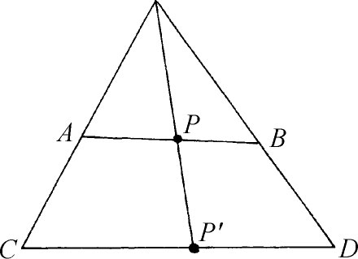

6．无穷集合的概念
分析的严密化揭示人们有必要去理解实数集合的结构。为了处理这个问题，康托尔早曾引进关于无穷点集的一些概念，特别是第一型的集合（第40章第6节）。康托尔认为无穷集合的研究是如此重要，以致他就为此而承担起无穷集合的研究。他期望这个研究能使他清楚地区分不同的不连续点的无穷集合。
集合论里的中心难点是无穷集合这个概念本身。从希腊时代以来，这样的集合很自然地引起数学家们与哲学家们的注意，而这种集合的本质以及看来是矛盾的性质，使得对这种集合的理解，没有任何进展。芝诺（Zeno）的悖论可能是难点的第一个迹象。既不是直线的无限可分性，也不是直线作为一个由离散的点构成的无穷集合，足以对运动做出合理的结论。亚里士多德考虑过无穷集合，例如整数集合，但他不承认一个无穷的集合可以作为固定的整体而存在。对他来说，集合只能是潜在地无穷的（potentially infinite）（第3章第10节）。
普罗克洛斯（欧几里得的注释者）注意到圆的一根直径分圆成为两半，由于直径有无穷多，所以必有两倍那么多的半圆。普罗克洛斯说，这在许多人看来是一个矛盾。但他用这样的说法来解决这个矛盾，他说，任何人只能说很大很大数目的直径或半圆，不能说一个实实在在无穷多的直径或半圆。换句话说，普罗克洛斯是接受亚里士多德的潜无穷（potential infinity）的概念而不接受实无穷（actual infinity）。这就回避了两倍无穷大等于一个无穷大的问题。
整个中世纪，关于是否有实实在在无穷多个对象的集合这个问题，哲学家们各持一端。这样的事实已被注意到：把两个同心圆上的点用公共半径连起来，就构成两个圆上的点之间的一一对应关系，但一个的周长却比另一个的长。
伽利略（Galileo Galilei）与无穷集合作过斗争，并因为它们不可理喻而放弃了。在他的《两门新科学》（Two New Sciences）（英译本18-40页）中，他注意到两个不等长的线段AB与CD上的点（图41.1）可以构成一一对应，从而可以想象它们含有同样多的点。他又注意到正整数可以和它们的平方构成一一对应，只要把每一个正整数同它的平方对应起来就行了。但这导致无穷大的不同的“数量级”，伽利略说这是不可能的：所有无穷大量都一样，不能比较大小。

图41.1
高斯于1831年7月12日给舒马赫的信(20)中说：“我反对把一个无穷量当作实体，这在数学中是从来不允许的。无穷只是一种说话的方式，当人们确切地说到极限时，是指某些比值可以任意近地趋近它，而另一些则允许没有界限地增加。”柯西如他的前人一样，不承认无穷集合的存在，因为部分能够同整体构成一一对应这件事，在他看来是矛盾的。
涉及集合的许多问题的争论是无休止的，并且卷入了形而上学的甚至是神学的辩论。大多数数学家对这个问题的态度是，不谈他们自己所不能解决的问题。他们全都避免对实在无穷集合的明确承认，尽管他们使用无穷级数与实数系。他们会说到直线上的点，但避免说直线是由无穷多个点构成的。这样回避困难问题的方式是虚伪的，但这对于建立古典的分析确是足够了。然而，当19世纪面对在分析中建立严密性的问题时，关于无穷集合的许多问题就再也躲避不开了。